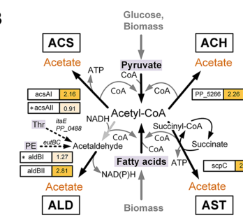

sucC encodes the beta subunit of succinyl-CoA synthetase (succinate--CoA ligase [ADP-forming], EC 6.2.1.5), a core enzyme of the tricarboxylic acid (TCA) cycle. The active enzyme is a heterotetramer of two alpha (SucD) and two beta (SucC) subunits that catalyzes the reversible interconversion of succinyl-CoA + phosphate + NDP and succinate + CoA + NTP. This reaction is the only substrate-level phosphorylation step of the TCA cycle, conserving the thioester bond energy of succinyl-CoA as a nucleoside triphosphate (ATP and/or GTP). The beta subunit contributes the nucleotide specificity and substrate (succinate) binding, harbors an ATP-grasp fold, and binds Mg2+, while the CoA- and phosphate-binding sites reside in the alpha subunit. As a soluble cytosolic enzyme, it links carbon oxidation through the TCA cycle to energy conservation and, in the reverse direction, supplies succinyl-CoA for biosynthetic reactions.
| GO Term | Evidence | Action | Reason |
|---|---|---|---|
|
GO:0000287
magnesium ion binding
|
IEA
GO_REF:0000104 |
ACCEPT |
Summary: Succinyl-CoA synthetase requires Mg2+ as a cofactor; UniProt annotates one Mg2+ per beta subunit with two binding residues (positions 199 and 213).
Reason: Consistent with the HAMAP rule (MF_00558) cofactor statement and conserved Mg2+-binding residues in the ATP-grasp domain. Mg2+ is required for the kinase/ligase chemistry.
|
|
GO:0003824
catalytic activity
|
IEA
GO_REF:0000002 |
MARK AS OVER ANNOTATED |
Summary: Root-level catalytic activity term; the specific succinate-CoA ligase activity is captured by more precise terms.
Reason: GO:0003824 is an uninformative high-level term superseded by the specific GO:0004775 (succinate-CoA ligase (ADP-forming) activity) annotation. Not useful as a representation of the gene's function.
|
|
GO:0004775
succinate-CoA ligase (ADP-forming) activity
|
IEA
GO_REF:0000120 |
ACCEPT |
Summary: This is the canonical molecular function of SucC/SucD - EC 6.2.1.5, the ADP-forming succinate-CoA ligase, mapped via RHEA:17661 and EC:6.2.1.5.
Reason: Core molecular function. Strongly supported by family/domain membership, HAMAP rule, and the explicit UniProt catalytic-activity statement. Represents the primary activity of the enzyme.
|
|
GO:0004776
succinate-CoA ligase (GDP-forming) activity
|
IEA
GO_REF:0000116 |
ACCEPT |
Summary: Bacterial succinyl-CoA synthetases, including this enzyme, can use GTP/GDP in addition to ATP/ADP; UniProt annotates the GDP-forming reaction (RHEA:22120) alongside the ADP-forming one.
Reason: The HAMAP rule and UniProt record both list the GTP/GDP catalytic activity. Bacterial SCS enzymes are generally nucleotide-promiscuous, so retaining the GDP-forming activity is appropriate as part of the core function.
|
|
GO:0005524
ATP binding
|
IEA
GO_REF:0000120 |
ACCEPT |
Summary: The beta subunit ATP-grasp domain binds ATP; UniProt annotates multiple ATP-binding residues (e.g., 46, 53-55, 99, 102, 107).
Reason: Directly supported by the ATP-grasp fold and conserved nucleotide-binding residues; the beta subunit provides nucleotide binding/specificity for the ligase reaction.
|
|
GO:0005829
cytosol
|
IEA
GO_REF:0000118 |
ACCEPT |
Summary: As a soluble TCA-cycle enzyme in a Gram-negative bacterium, SucC acts in the cytoplasm/cytosol.
Reason: Consistent with the soluble, cytoplasmic localization expected for a bacterial TCA-cycle enzyme. No membrane or secretion signals are present.
|
|
GO:0006099
tricarboxylic acid cycle
|
IEA
GO_REF:0000120 |
ACCEPT |
Summary: Succinyl-CoA synthetase catalyzes the succinyl-CoA to succinate step, the substrate-level phosphorylation step of the TCA cycle.
Reason: Core biological process. Well supported by enzyme family, pathway membership (UniPathway UPA00223), and HAMAP rule.
|
|
GO:0006104
succinyl-CoA metabolic process
|
IEA
GO_REF:0000118 |
KEEP AS NON CORE |
Summary: The enzyme directly interconverts succinyl-CoA and succinate, so it participates in succinyl-CoA metabolism.
Reason: Accurate but a more general parent process that is subsumed by the specific TCA cycle role; retained as non-core. The succinate-CoA ligase activity and TCA cycle annotations are the primary representations.
|
|
GO:0042709
succinate-CoA ligase complex
|
IEA
GO_REF:0000120 |
ACCEPT |
Summary: SucC is the beta subunit of the succinate-CoA ligase complex, a heterotetramer of two alpha and two beta subunits.
Reason: Correct cellular component / complex membership, supported by the UniProt SUBUNIT statement (heterotetramer of two alpha and two beta subunits).
|
|
GO:0046872
metal ion binding
|
IEA
GO_REF:0000002 |
MARK AS OVER ANNOTATED |
Summary: General metal-ion binding term; the relevant metal here is Mg2+, captured specifically by GO:0000287.
Reason: GO:0046872 is a generic parent of GO:0000287 (magnesium ion binding), which is the precise and informative annotation. The general term adds no information.
|
The research report should be a detailed narrative explaining the function, biological processes, and localization of the gene product. Citations should be given for all claims.
You should prioritize authoritative reviews and primary scientific literature when conducting research. You can supplement
this with annotations you find in gene/protein databases, but these can be outdated or inaccurate.
We are specifically interested in the primary function of the gene - for enzymes, what reaction is catalyzed, and what is the substrate specificity? For transporters, what is the substrate? For structural proteins or adapters, what is the broader structural role? For signaling molecules, what is the role in the pathway.
We are interested in where in or outside the cell the gene product carries out its function.
We are also interested in the signaling or biochemical pathways in which the gene functions. We are less interested in broad pleiotropic effects, except where these elucidate the precise role.
Include evidence where possible. We are interested in both experimental evidence as well as inference from structure, evolution, or bioinformatic analysis. Precise studies should be prioritized over high-throughput, where available.
The UniProt target provided (Q88FB2) corresponds to sucC in Pseudomonas putida KT2440 with ordered locus PP_4186, annotated as succinate–CoA ligase / succinyl‑CoA synthetase subunit β (ADP‑forming; EC 6.2.1.5). This identity is supported by P. putida KT2440 literature explicitly tying PP_4186 to succinate–CoA ligase [ADP‑forming] subunit beta and describing the enzyme’s canonical reaction, consistent with UniProt’s description (geiger2019investigationofrnabased pages 93-97, geiger2019investigationofrnabased pages 22-27).
Succinyl‑CoA synthetase (also called succinate–CoA ligase) is the TCA‑cycle enzyme that catalyzes the reversible interconversion:
succinyl‑CoA + ADP + Pi ⇌ succinate + CoA + ATP
This is the substrate‑level phosphorylation step of the cycle in many organisms and is described as the succinyl‑CoA→succinate step of the TCA cycle (lancaster2023succinylcoasynthetasedysfunction pages 1-2). The same reaction is stated in Pseudomonas sucC regulatory literature focused on KT2440 (geiger2019investigationofrnabased pages 22-27, geiger2019investigationofrnabasedb pages 22-27).
In bacteria, the enzyme is composed of two subunits (SucC and SucD, commonly referred to as β and α subunits, respectively) that assemble into the functional succinyl‑CoA synthetase/ligase complex. A 2023 authoritative review summarizes that prokaryotic studies (e.g., E. coli) support an α/β subunit organization (often described as an (αβ)2 complex) (lancaster2023succinylcoasynthetasedysfunction pages 1-2). In P. putida KT2440 locus context, sucC (PP_4186) is repeatedly discussed together with its partner sucD in operon/complex annotations (geiger2019investigationofrnabased pages 93-97).
While the physiological substrate pair in the TCA cycle is succinyl‑CoA/succinate, bacterial SucCD enzymes can show measurable activity on related C4‑dicarboxylates in vitro, implying some catalytic promiscuity. For example, Nolte et al. (2014) reported 10–21% activity with malate relative to succinate activity, with Km values in the mM range (L‑malate 2.5–3.6 mM; D‑malate 3.6–4.2 mM), and demonstrated CoA‑thioester formation for succinate analogues (nolte2014novelcharacteristicsof pages 1-2). This informs functional annotation by clarifying that “substrate specificity” is centered on succinate/succinyl‑CoA but may extend to analogues under some conditions.
In P. putida KT2440, sucC is best understood as a central carbon metabolism gene, contributing to the TCA cycle at the succinyl‑CoA↔succinate step, and thus linking carbon oxidation to ATP generation via substrate‑level phosphorylation (geiger2019investigationofrnabased pages 22-27, lancaster2023succinylcoasynthetasedysfunction pages 1-2).
The retrieved sources situate SucCD as a central metabolic enzyme (TCA‑cycle step) but do not provide a direct localization experiment for KT2440 SucC (e.g., imaging, fractionation with SucC detection). Therefore, the most defensible statement from the available evidence is:
- SucC functions as a soluble central metabolic enzyme in the cytosol, consistent with canonical TCA‑cycle biochemistry, but this is inferred rather than directly measured for KT2440 in the retrieved texts (lancaster2023succinylcoasynthetasedysfunction pages 1-2, geiger2019investigationofrnabasedb pages 22-27).
A notable KT2440‑relevant feature is the “sucC RNA motif” located in the 5′ UTR of sucC and reported as unique to Pseudomonas. In the Geiger study, 72 representatives of the motif are discussed; it is treated as a probable cis‑regulatory RNA but considered an ambiguous riboswitch candidate, with alternative hypotheses such as protein‑binding via palindromic domains (geiger2019investigationofrnabasedb pages 22-27, geiger2019investigationofrnabased pages 22-27).
Geiger further reports experimental work suggesting that succinyl‑CoA synthetase/ligase subunits are candidate binders of this RNA motif; SPR data suggested binding likely involves a single subunit rather than the holoenzyme, with discussion of sucD as a candidate interactor, and notes that KD determination was pending (geiger2019investigationofrnabased pages 93-97).
Weimer et al. (2024) studied P. putida KT2440 cultured in an anoxic bio‑electrochemical system (BES) and described acetate accumulation and multiple acetate biosynthesis routes. Importantly for sucC functional context, they describe the acetate:succinate CoA‑transferase (AST) pathway as coupling ATP formation through regeneration of succinyl‑CoA into succinate via succinyl‑CoA synthetase (weimer2024systemsbiologyof pages 8-9). Figure evidence from the paper depicts this AST/energy coupling route explicitly (weimer2024systemsbiologyof media 4f549e8e).
Quantitatively, Weimer et al. reported that engineered mutants deficient in acetate formation improved 2‑ketogluconate performance: the best-performing mutant accumulated 2‑ketogluconate at twice the rate of wild type with an increased yield of 0.96 mol/mol (weimer2024systemsbiologyof pages 8-9). While sucC is not individually perturbed here, the study is a recent, real‑world implementation context where flux through succinyl‑CoA synthetase is directly invoked as part of an ATP‑linked acetate strategy.
Puja et al. (2020) identified a multidrug‑resistant (MDR) P. putida KT2440 mutant (HPG‑5) carrying an inactivating mutation in sucD (the partner subunit of sucC in the succinyl‑CoA synthetase complex). Disruption of sucD in KT2440 reproduced the MDR phenotype and was associated with activation of the glyoxylate shunt (puja2020coordinateoverexpressionof pages 1-2). This provides strong organism‑specific genetic evidence that integrity of the SucCD step influences central metabolism remodeling with clinically/industrial-relevant phenotypes.
The paper reports quantitative antibiotic susceptibility changes linked to efflux regulation in this MDR background, including:
- selection frequency for this MDR mutant type: 1 × 10−9 (puja2020coordinateoverexpressionof pages 1-2)
- 8–16‑fold MIC decreases for gentamicin/amikacin after restoring susceptibility via operon deletion,
- multiple additional MIC fold‑changes (2–32‑fold) under different efflux‑pump deletions, illustrating large physiological consequences of central metabolism/efflux coupling (puja2020coordinateoverexpressionof pages 4-5).
Weimer et al. (2024) is a recent peer‑reviewed systems biology study connecting central metabolism to a new operational regime (anoxic-electrogenic). It provides an updated mechanistic view of energy metabolism adaptations and explicitly places succinyl‑CoA synthetase into an ATP‑coupled acetate biosynthesis framework in KT2440 (weimer2024systemsbiologyof pages 8-9, weimer2024systemsbiologyof media 4f549e8e).
It also reports system-level quantitative protein abundance changes over time under these conditions, including decreases of up to 24‑fold for some ribosomal proteins in later stages, indicating major physiological remodeling during long-term BES incubation (weimer2024systemsbiologyof pages 8-9).
Eng et al. (2023, preprint) focused on growth‑coupled production of indigoidine from aromatic substrates and reported quantitative metabolomics/proteomics shifts around the TCA node feeding succinyl‑CoA. While SucCD itself was not singled out, the upstream conversion of α‑ketoglutarate to succinyl‑CoA (SucA/SucB/LpdG) was downregulated, with metabolite changes including α‑ketoglutarate +2.71×, glutamate +4.4×, glutamine −6×, fumarate +2.7×, and acetyl‑CoA and citrate ~+2× compared to WT in one design condition (eng2023ensembleanditerative pages 13-16). This provides current evidence that the succinyl‑CoA branch point is frequently implicated in KT2440 strain engineering strategies.
Lancaster & Graham (2023) review succinyl‑CoA synthetase as a TCA enzyme coupled to substrate-level phosphorylation and summarize bacterial subunit organization and mechanistic insights from prokaryotes (lancaster2023succinylcoasynthetasedysfunction pages 1-2). Although the review’s primary focus is mitochondrial disease, it is an authoritative consolidation of SCS function and enzyme architecture.
Bioelectrochemical systems (BES) bioproduction in KT2440: Weimer et al. (2024) used BES cultivation to enable an anoxic‑electrogenic operating mode and performed metabolic engineering to enhance 2‑ketogluconate production, providing a concrete implementation where ATP-linked acetate routing via succinyl‑CoA synthetase is part of the mechanistic model (weimer2024systemsbiologyof pages 8-9, weimer2024systemsbiologyof media 4f549e8e).
Industrial/bioprocess relevance of central metabolism remodeling: The MDR phenotype tied to sucD disruption (partner of sucC) highlights that perturbing this central step can trigger broad network responses (e.g., glyoxylate shunt activation) that influence stress phenotypes (antibiotics, solvents), relevant to both clinical and industrial settings where robustness is critical (puja2020coordinateoverexpressionof pages 1-2).
Biocatalytic potential / pathway extensions: Demonstrated bacterial SucCD promiscuity and activation of succinate analogues expands potential metabolic engineering options (e.g., activation of alternative dicarboxylates), though these findings are not specific to KT2440 (nolte2014novelcharacteristicsof pages 1-2, schurmann2011novelreactionof pages 1-2).
Centrality and pleiotropy: Because SucCD sits at a key TCA step that can directly generate ATP, perturbations in its function are expected to have system‑level effects. The KT2440 sucD mutant MDR phenotype and inferred glyoxylate shunt activation is consistent with this expectation, illustrating a link between energy metabolism and envelope/efflux phenotypes (puja2020coordinateoverexpressionof pages 1-2).
Annotation confidence: For KT2440, sucC functional annotation as the β subunit of ADP‑forming succinyl‑CoA synthetase is well supported by locus-specific literature naming PP_4186 and by canonical enzyme chemistry described across authoritative sources (geiger2019investigationofrnabased pages 22-27, lancaster2023succinylcoasynthetasedysfunction pages 1-2).
Regulatory complexity in Pseudomonas: The Pseudomonas-specific sucC 5′ UTR motif and the experimental suggestion of protein–RNA interactions involving succinate–CoA ligase subunits implies that sucC expression may be subject to organism‑specific post‑transcriptional regulation, a nuance relevant to engineering and interpretation of omics results (geiger2019investigationofrnabased pages 93-97, geiger2019investigationofrnabasedb pages 22-27).
The following figure panel (from Weimer et al. 2024) depicts the acetate biosynthesis routes and explicitly shows the AST pathway’s coupling to succinyl‑CoA synthetase activity (succinate–succinyl‑CoA node) under anoxic‑electrogenic conditions in P. putida KT2440 (weimer2024systemsbiologyof media 4f549e8e).
| Feature | Summary | Evidence / source |
|---|---|---|
| Target gene / protein | sucC = PP_4186 = UniProt Q88FB2 in Pseudomonas putida KT2440; annotated as succinate--CoA ligase [ADP-forming] / succinyl-CoA synthetase subunit beta. A partner gene sucD = PP_4185 is mentioned in operon/KEGG context as the other subunit of the complex. | Geiger 2019 identifies PP_4186 as the succinate-CoA ligase [ADP-forming] subunit beta and references KEGG PP_4185 + PP_4186 for the complex (geiger2019investigationofrnabased pages 93-97, geiger2019investigationofrnabased pages 22-27) |
| Enzyme name / EC / reaction | The SucC/SucD complex is succinyl-CoA synthetase / succinate--CoA ligase (ADP-forming), EC 6.2.1.5. Core reaction: succinyl-CoA + ADP + Pi ⇌ succinate + CoA + ATP. | Explicit reaction and subunit assignment in Pseudomonas sucC literature; broader bacterial mechanistic reviews agree that SCS performs the substrate-level phosphorylation step of the TCA cycle (geiger2019investigationofrnabased pages 22-27, lancaster2023succinylcoasynthetasedysfunction pages 1-2, geiger2019investigationofrnabasedb pages 22-27) |
| Complex architecture | In bacteria, succinyl-CoA synthetase is composed of alpha and beta subunits (commonly discussed as SucD/SucC) and forms the canonical bacterial SCS complex. | Bacterial structural/biochemical summaries and Pseudomonas locus context support two-subunit organization (lancaster2023succinylcoasynthetasedysfunction pages 1-2, schurmann2011novelreactionof pages 1-2, geiger2019investigationofrnabased pages 93-97) |
| Cellular location | Likely cytosolic / soluble central-metabolic enzyme, but no retrieved source directly demonstrated localization for P. putida KT2440 sucC. Localization should therefore be treated as inferred from its TCA-cycle role rather than directly proven here. | Retrieved evidence situates the enzyme in central carbon metabolism/TCA but does not provide a direct localization experiment for KT2440 (lancaster2023succinylcoasynthetasedysfunction pages 1-2, geiger2019investigationofrnabasedb pages 22-27) |
| Pathway context | TCA cycle: reversible succinyl-CoA ↔ succinate step coupled to ATP formation. Additional 2024 systems-biology context: in anoxic-electrogenic P. putida, the acetate:succinate CoA-transferase (AST) pathway is described as coupling ATP formation through regeneration of succinyl-CoA into succinate via succinyl-CoA synthetase. | Canonical TCA role and 2024 AST/acetate-coupling interpretation in KT2440 (lancaster2023succinylcoasynthetasedysfunction pages 1-2, weimer2024systemsbiologyof pages 8-9, weimer2024systemsbiologyof media 4f549e8e) |
| Regulatory / RNA context | A sucC 5' UTR RNA motif occurs uniquely in Pseudomonas species and was proposed as a cis-regulatory element; 72 representatives were reported. Geiger’s work also reported candidate interaction of succinate-CoA ligase subunits with this RNA motif. | RNA motif/regulatory context for Pseudomonas sucC (geiger2019investigationofrnabased pages 22-27, geiger2019investigationofrnabased pages 93-97) |
| Quantitative finding: multidrug-resistance link via SCS disruption | In KT2440-related work, a multidrug-resistant mutant HPG-5 carried an inactivating mutation in sucD; second-type mutants like HPG-5 appeared at 1 × 10⁻⁹ selection frequency. Deleting parXY (PP_3455/3456) restored susceptibility with 8- to 16-fold MIC decreases for gentamicin/amikacin and 2- to 4-fold decreases for fluoroquinolones/tobramycin; deleting ttgABC sensitized KT2440 to β-lactams by 2- to 32-fold, fluoroquinolones 2-fold, chloramphenicol 2-fold, tetracycline 2-fold, novobiocin 32-fold. The phenotype was linked to sucD disruption activating the glyoxylate shunt. | Quantitative antibiotic-resistance phenotypes from Puja et al. 2020 (puja2020coordinateoverexpressionof pages 1-2, puja2020coordinateoverexpressionof pages 4-5) |
| Quantitative finding: anoxic-electrogenic systems biology | Under anoxic-electrogenic conditions, KT2440 maintained selective metabolism; after 24 h, 95 proteins decreased and 40 increased significantly. After 100 h, abundance of 27 ribosomal proteins decreased, with reductions of up to 24-fold (RpsU example). These data provide recent systems-level context in which succinyl-CoA synthetase participates in ATP-linked acetate routing. | Weimer et al. 2024 proteome/time-course data (weimer2024systemsbiologyof pages 8-9) |
| Quantitative finding: butanol assimilation / central metabolism context | In P. putida BIRD-1 (not KT2440, but relevant Pseudomonas central-metabolism context), an acyl-CoA synthetase candidate was induced 245-fold and an adjacent acyl-CoA dehydrogenase-domain protein 278-fold during butanol assimilation; the glyoxylate shunt was highlighted as key for routing carbon to central metabolism. | Strain-specific but informative Pseudomonas metabolic context; not direct evidence for KT2440 sucC expression (cuenca2016understandingbutanoltolerance pages 9-10) |
| Key references | Geiger 2019 (RNA-based regulation thesis; Pseudomonas sucC motif and PP_4186 annotation; URL not available in retrieved context). Puja et al. 2020, Environmental Microbiology, DOI: https://doi.org/10.1111/1462-2920.15200. Weimer et al. 2024, Microbial Cell Factories, DOI: https://doi.org/10.1186/s12934-024-02509-8. Lancaster & Graham 2023, Int J Mol Sci, DOI: https://doi.org/10.3390/ijms241310725. Nolte et al. 2014, Appl Environ Microbiol, DOI: https://doi.org/10.1128/AEM.03075-13. Schürmann et al. 2011, J Bacteriol, DOI: https://doi.org/10.1128/JB.00049-11. | Consolidated from retrieved citation contexts (huang2020understandingthemechanism pages 121-125, nolte2014novelcharacteristicsof pages 1-2, lancaster2023succinylcoasynthetasedysfunction pages 1-2, schurmann2011novelreactionof pages 1-2) |
Table: This table compiles the verified identity, biochemical role, pathway placement, and quantitative literature findings for P. putida KT2440 sucC (PP_4186/Q88FB2) and its partner subunit context. It is useful as a compact evidence map linking annotation, reaction chemistry, and recent systems-level observations.
References
(geiger2019investigationofrnabased pages 93-97): S Geiger. Investigation of rna-based regulation of gene expression in proteobacterial energy metabolism. Unknown journal, 2019.
(geiger2019investigationofrnabased pages 22-27): S Geiger. Investigation of rna-based regulation of gene expression in proteobacterial energy metabolism. Unknown journal, 2019.
(lancaster2023succinylcoasynthetasedysfunction pages 1-2): Makayla S. Lancaster and Brett H. Graham. Succinyl-coa synthetase dysfunction as a mechanism of mitochondrial encephalomyopathy: more than just an oxidative energy deficit. International Journal of Molecular Sciences, 24:10725, Jun 2023. URL: https://doi.org/10.3390/ijms241310725, doi:10.3390/ijms241310725. This article has 30 citations.
(geiger2019investigationofrnabasedb pages 22-27): S Geiger. Investigation of rna-based regulation of gene expression in proteobacterial energy metabolism. Unknown journal, 2019.
(nolte2014novelcharacteristicsof pages 1-2): Johannes Christoph Nolte, Marc Schürmann, Catherine-Louise Schepers, Elvira Vogel, Jan Hendrik Wübbeler, and Alexander Steinbüchel. Novel characteristics of succinate coenzyme a (succinate-coa) ligases: conversion of malate to malyl-coa and coa-thioester formation of succinate analogues in vitro. Applied and Environmental Microbiology, 80:166-176, Jan 2014. URL: https://doi.org/10.1128/aem.03075-13, doi:10.1128/aem.03075-13. This article has 41 citations and is from a peer-reviewed journal.
(weimer2024systemsbiologyof pages 8-9): Anna Weimer, Laura Pause, Fabian Ries, Michael Kohlstedt, Lorenz Adrian, Jens Krömer, Bin Lai, and Christoph Wittmann. Systems biology of electrogenic pseudomonas putida - multi-omics insights and metabolic engineering for enhanced 2-ketogluconate production. Microbial Cell Factories, Sep 2024. URL: https://doi.org/10.1186/s12934-024-02509-8, doi:10.1186/s12934-024-02509-8. This article has 7 citations and is from a peer-reviewed journal.
(weimer2024systemsbiologyof media 4f549e8e): Anna Weimer, Laura Pause, Fabian Ries, Michael Kohlstedt, Lorenz Adrian, Jens Krömer, Bin Lai, and Christoph Wittmann. Systems biology of electrogenic pseudomonas putida - multi-omics insights and metabolic engineering for enhanced 2-ketogluconate production. Microbial Cell Factories, Sep 2024. URL: https://doi.org/10.1186/s12934-024-02509-8, doi:10.1186/s12934-024-02509-8. This article has 7 citations and is from a peer-reviewed journal.
(puja2020coordinateoverexpressionof pages 1-2): Hélène Puja, Gwendoline Comment, Sophie Chassagne, Patrick Plésiat, and Katy Jeannot. Coordinate overexpression of two
(puja2020coordinateoverexpressionof pages 4-5): Hélène Puja, Gwendoline Comment, Sophie Chassagne, Patrick Plésiat, and Katy Jeannot. Coordinate overexpression of two
(eng2023ensembleanditerative pages 13-16): Thomas T Eng, Deepanwita Banerjee, Javier Menasalvas, Yan Chen, Jennifer Gin, Hemant Choudhary, Edward Baidoo, Jian Hua Chen, Axel Ekman, Ramu Kakumanu, Yuzhong Liu Diercks, Alex Codik, Carolyn Larabell, John Gladden, Blake A Simmons, Jay D Keasling, Christopher J Petzold, and Aindrila Mukhopadhyay. Ensemble and iterative engineering for maximized bioconversion to the blue pigment, indigoidine from non-canonical sustainable carbon sources. bioRxiv, Mar 2023. URL: https://doi.org/10.1101/2023.03.16.532821, doi:10.1101/2023.03.16.532821. This article has 1 citations.
(schurmann2011novelreactionof pages 1-2): Marc Schürmann, Jan Hendrik Wübbeler, Jessica Grote, and Alexander Steinbüchel. Novel reaction of succinyl coenzyme a (succinyl-coa) synthetase: activation of 3-sulfinopropionate to 3-sulfinopropionyl-coa in advenella mimigardefordensis strain dpn7 t during degradation of 3,3′-dithiodipropionic acid. Jun 2011. URL: https://doi.org/10.1128/jb.00049-11, doi:10.1128/jb.00049-11. This article has 36 citations and is from a peer-reviewed journal.
(cuenca2016understandingbutanoltolerance pages 9-10): María del Sol Cuenca, Amalia Roca, Carlos Molina‐Santiago, Estrella Duque, Jean Armengaud, María R. Gómez‐Garcia, and Juan L. Ramos. Understanding butanol tolerance and assimilation in p seudomonas putida bird‐1: an integrated omics approach. Microbial Biotechnology, 9:100-115, Jan 2016. URL: https://doi.org/10.1111/1751-7915.12328, doi:10.1111/1751-7915.12328. This article has 59 citations and is from a peer-reviewed journal.
(huang2020understandingthemechanism pages 121-125): Ji Huang. Understanding the mechanism of succinyl-coa synthetase catalysis from structural studies. Aug 2020. URL: https://doi.org/10.11575/prism/39384, doi:10.11575/prism/39384. This article has 1 citations.
(borchert2024machinelearninganalysis pages 7-11): Andrew J. Borchert, Alissa C. Bleem, Hyun Gyu Lim, Kevin Rychel, Keven D. Dooley, Zoe A. Kellermyer, Tracy L. Hodges, Bernhard O. Palsson, and Gregg T. Beckham. Machine learning analysis of rb-tnseq fitness data predicts functional gene modules in pseudomonas putida kt2440. Mar 2024. URL: https://doi.org/10.1128/msystems.00942-23, doi:10.1128/msystems.00942-23. This article has 13 citations and is from a peer-reviewed journal.

id: Q88FB2
gene_symbol: sucC
product_type: PROTEIN
status: DRAFT
taxon:
id: NCBITaxon:160488
label: Pseudomonas putida (strain ATCC 47054 / DSM 6125 / CFBP 8728 / NCIMB 11950 / KT2440)
description: sucC encodes the beta subunit of succinyl-CoA synthetase (succinate--CoA ligase [ADP-forming], EC 6.2.1.5), a core enzyme of the tricarboxylic acid (TCA) cycle. The active enzyme is a heterotetramer of two alpha (SucD) and two beta (SucC) subunits that catalyzes the reversible interconversion of succinyl-CoA + phosphate + NDP and succinate + CoA + NTP. This reaction is the only substrate-level phosphorylation step of the TCA cycle, conserving the thioester bond energy of succinyl-CoA as a nucleoside triphosphate (ATP and/or GTP). The beta subunit contributes the nucleotide specificity and substrate (succinate) binding, harbors an ATP-grasp fold, and binds Mg2+, while the CoA- and phosphate-binding sites reside in the alpha subunit. As a soluble cytosolic enzyme, it links carbon oxidation through the TCA cycle to energy conservation and, in the reverse direction, supplies succinyl-CoA for biosynthetic reactions.
existing_annotations:
- term:
id: GO:0000287
label: magnesium ion binding
evidence_type: IEA
original_reference_id: GO_REF:0000104
qualifier: enables
review:
summary: Succinyl-CoA synthetase requires Mg2+ as a cofactor; UniProt annotates one Mg2+ per beta subunit with two binding residues (positions 199 and 213).
action: ACCEPT
reason: Consistent with the HAMAP rule (MF_00558) cofactor statement and conserved Mg2+-binding residues in the ATP-grasp domain. Mg2+ is required for the kinase/ligase chemistry.
- term:
id: GO:0003824
label: catalytic activity
evidence_type: IEA
original_reference_id: GO_REF:0000002
qualifier: enables
review:
summary: Root-level catalytic activity term; the specific succinate-CoA ligase activity is captured by more precise terms.
action: MARK_AS_OVER_ANNOTATED
reason: GO:0003824 is an uninformative high-level term superseded by the specific GO:0004775 (succinate-CoA ligase (ADP-forming) activity) annotation. Not useful as a representation of the gene's function.
- term:
id: GO:0004775
label: succinate-CoA ligase (ADP-forming) activity
evidence_type: IEA
original_reference_id: GO_REF:0000120
qualifier: enables
review:
summary: This is the canonical molecular function of SucC/SucD - EC 6.2.1.5, the ADP-forming succinate-CoA ligase, mapped via RHEA:17661 and EC:6.2.1.5.
action: ACCEPT
reason: Core molecular function. Strongly supported by family/domain membership, HAMAP rule, and the explicit UniProt catalytic-activity statement. Represents the primary activity of the enzyme.
- term:
id: GO:0004776
label: succinate-CoA ligase (GDP-forming) activity
evidence_type: IEA
original_reference_id: GO_REF:0000116
qualifier: enables
review:
summary: Bacterial succinyl-CoA synthetases, including this enzyme, can use GTP/GDP in addition to ATP/ADP; UniProt annotates the GDP-forming reaction (RHEA:22120) alongside the ADP-forming one.
action: ACCEPT
reason: The HAMAP rule and UniProt record both list the GTP/GDP catalytic activity. Bacterial SCS enzymes are generally nucleotide-promiscuous, so retaining the GDP-forming activity is appropriate as part of the core function.
- term:
id: GO:0005524
label: ATP binding
evidence_type: IEA
original_reference_id: GO_REF:0000120
qualifier: enables
review:
summary: The beta subunit ATP-grasp domain binds ATP; UniProt annotates multiple ATP-binding residues (e.g., 46, 53-55, 99, 102, 107).
action: ACCEPT
reason: Directly supported by the ATP-grasp fold and conserved nucleotide-binding residues; the beta subunit provides nucleotide binding/specificity for the ligase reaction.
- term:
id: GO:0005829
label: cytosol
evidence_type: IEA
original_reference_id: GO_REF:0000118
qualifier: located_in
review:
summary: As a soluble TCA-cycle enzyme in a Gram-negative bacterium, SucC acts in the cytoplasm/cytosol.
action: ACCEPT
reason: Consistent with the soluble, cytoplasmic localization expected for a bacterial TCA-cycle enzyme. No membrane or secretion signals are present.
- term:
id: GO:0006099
label: tricarboxylic acid cycle
evidence_type: IEA
original_reference_id: GO_REF:0000120
qualifier: involved_in
review:
summary: Succinyl-CoA synthetase catalyzes the succinyl-CoA to succinate step, the substrate-level phosphorylation step of the TCA cycle.
action: ACCEPT
reason: Core biological process. Well supported by enzyme family, pathway membership (UniPathway UPA00223), and HAMAP rule.
- term:
id: GO:0006104
label: succinyl-CoA metabolic process
evidence_type: IEA
original_reference_id: GO_REF:0000118
qualifier: involved_in
review:
summary: The enzyme directly interconverts succinyl-CoA and succinate, so it participates in succinyl-CoA metabolism.
action: KEEP_AS_NON_CORE
reason: Accurate but a more general parent process that is subsumed by the specific TCA cycle role; retained as non-core. The succinate-CoA ligase activity and TCA cycle annotations are the primary representations.
- term:
id: GO:0042709
label: succinate-CoA ligase complex
evidence_type: IEA
original_reference_id: GO_REF:0000120
qualifier: part_of
review:
summary: SucC is the beta subunit of the succinate-CoA ligase complex, a heterotetramer of two alpha and two beta subunits.
action: ACCEPT
reason: Correct cellular component / complex membership, supported by the UniProt SUBUNIT statement (heterotetramer of two alpha and two beta subunits).
- term:
id: GO:0046872
label: metal ion binding
evidence_type: IEA
original_reference_id: GO_REF:0000002
qualifier: enables
review:
summary: General metal-ion binding term; the relevant metal here is Mg2+, captured specifically by GO:0000287.
action: MARK_AS_OVER_ANNOTATED
reason: GO:0046872 is a generic parent of GO:0000287 (magnesium ion binding), which is the precise and informative annotation. The general term adds no information.
core_functions:
- description: Catalyzes the reversible, Mg2+-dependent, nucleotide-coupled interconversion of succinyl-CoA and succinate (substrate-level phosphorylation step of the TCA cycle), as the beta subunit of the heterotetrameric succinyl-CoA synthetase.
molecular_function:
id: GO:0004775
label: succinate-CoA ligase (ADP-forming) activity
supported_by:
- reference_id: GO_REF:0000120
supporting_text: EC 6.2.1.5 / RHEA:17661 mapping; UniProt HAMAP-Rule MF_00558 catalytic-activity and pathway statements.
directly_involved_in:
- id: GO:0006099
label: tricarboxylic acid cycle
in_complex:
id: GO:0042709
label: succinate-CoA ligase complex
references:
- id: GO_REF:0000002
title: Gene Ontology annotation through association of InterPro records with GO terms
findings: []
- id: GO_REF:0000104
title: Electronic Gene Ontology annotations created by transferring manual GO annotations between related proteins based on shared sequence features
findings: []
- id: GO_REF:0000116
title: Automatic Gene Ontology annotation based on Rhea mapping
findings: []
- id: GO_REF:0000118
title: TreeGrafter-generated GO annotations
findings: []
- id: GO_REF:0000120
title: Combined Automated Annotation using Multiple IEA Methods
findings: []
- id: PMID:12534463
title: Complete genome sequence and comparative analysis of the metabolically versatile Pseudomonas putida KT2440.
findings: []
reference_review:
relevance: MEDIUM
correctness: VERIFIED
review_notes: Genome sequencing/annotation paper that established the PP_4186 locus (sucC) in P. putida KT2440. PubMed ID matches the UniProt cross-reference. Background/locus provenance rather than direct functional characterization of SucC.
{kind=link}